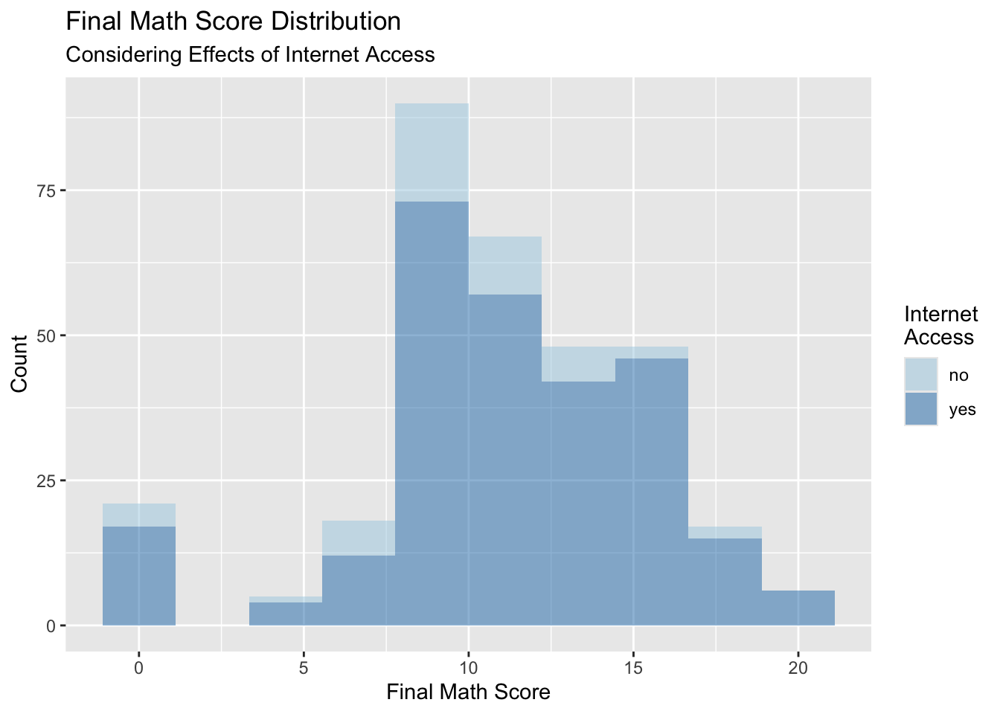
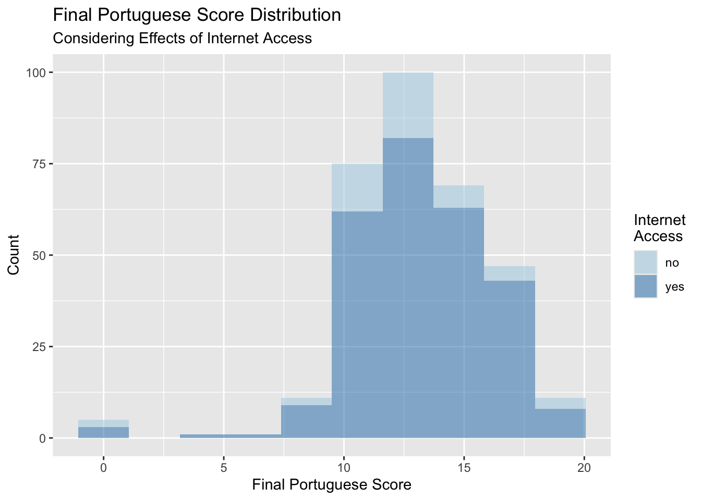
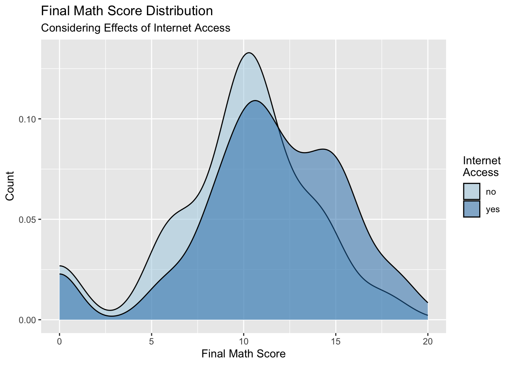

[conflicted] Will prefer dplyr::filter over any other package.
First, modify the code provided with the download to read in the data from a local file source (your downloaded .csv files) and combine the two data frames. Use local paths as they do in their code.
d1 <-read.table("student-mat.csv",sep=";",header=TRUE)d2 <-read.table("student-por.csv",sep=";",header=TRUE)d3 <-merge(d1,d2,by=c("school","sex","age","address","famsize","Pstatus","Medu","Fedu","Mjob","Fjob","reason","nursery","internet"))print(nrow(d3)) # 382 students
[1] 382
Second, read in and combine the data using functions from the tidyverse. Use an inner_join() on the variables they used in their code. Do you notice any issues? Make a note of the issue.
d_one <-read_delim("student-mat.csv", delim =";")
Rows: 395 Columns: 33
── Column specification ────────────────────────────────────────────────────────
Delimiter: ";"
chr (17): school, sex, address, famsize, Pstatus, Mjob, Fjob, reason, guardi...
dbl (16): age, Medu, Fedu, traveltime, studytime, failures, famrel, freetime...
ℹ Use `spec()` to retrieve the full column specification for this data.
ℹ Specify the column types or set `show_col_types = FALSE` to quiet this message.
d_two <-read_delim("student-por.csv", delim =";")
Rows: 649 Columns: 33
── Column specification ────────────────────────────────────────────────────────
Delimiter: ";"
chr (17): school, sex, address, famsize, Pstatus, Mjob, Fjob, reason, guardi...
dbl (16): age, Medu, Fedu, traveltime, studytime, failures, famrel, freetime...
ℹ Use `spec()` to retrieve the full column specification for this data.
ℹ Specify the column types or set `show_col_types = FALSE` to quiet this message.
d_three <-inner_join(d_one, d_two, by =c("school","sex","age","address","famsize","Pstatus","Medu","Fedu","Mjob","Fjob","reason","nursery","internet") )
Warning in inner_join(d_one, d_two, by = c("school", "sex", "age", "address", : Detected an unexpected many-to-many relationship between `x` and `y`.
ℹ Row 79 of `x` matches multiple rows in `y`.
ℹ Row 79 of `y` matches multiple rows in `x`.
ℹ If a many-to-many relationship is expected, set `relationship =
"many-to-many"` to silence this warning.
d_three
# A tibble: 382 × 53
school sex age address famsize Pstatus Medu Fedu Mjob Fjob reason
<chr> <chr> <dbl> <chr> <chr> <chr> <dbl> <dbl> <chr> <chr> <chr>
1 GP F 18 U GT3 A 4 4 at_home teach… course
2 GP F 17 U GT3 T 1 1 at_home other course
3 GP F 15 U LE3 T 1 1 at_home other other
4 GP F 15 U GT3 T 4 2 health servi… home
5 GP F 16 U GT3 T 3 3 other other home
6 GP M 16 U LE3 T 4 3 services other reput…
7 GP M 16 U LE3 T 2 2 other other home
8 GP F 17 U GT3 A 4 4 other teach… home
9 GP M 15 U LE3 A 3 2 services other home
10 GP M 15 U GT3 T 3 4 other other home
# ℹ 372 more rows
# ℹ 42 more variables: guardian.x <chr>, traveltime.x <dbl>, studytime.x <dbl>,
# failures.x <dbl>, schoolsup.x <chr>, famsup.x <chr>, paid.x <chr>,
# activities.x <chr>, nursery <chr>, higher.x <chr>, internet <chr>,
# romantic.x <chr>, famrel.x <dbl>, freetime.x <dbl>, goout.x <dbl>,
# Dalc.x <dbl>, Walc.x <dbl>, health.x <dbl>, absences.x <dbl>, G1.x <dbl>,
# G2.x <dbl>, G3.x <dbl>, guardian.y <chr>, traveltime.y <dbl>, …
Use an inner_join() on all variables other than G1, G2, G3, paid, and absences. Use this form of the combined data in further exercises.
# A tibble: 320 × 38
school sex age address famsize Pstatus Medu Fedu Mjob Fjob reason
<chr> <chr> <dbl> <chr> <chr> <chr> <dbl> <dbl> <chr> <chr> <chr>
1 GP F 18 U GT3 A 4 4 at_home teach… course
2 GP F 17 U GT3 T 1 1 at_home other course
3 GP F 15 U GT3 T 4 2 health servi… home
4 GP F 16 U GT3 T 3 3 other other home
5 GP M 16 U LE3 T 4 3 services other reput…
6 GP M 16 U LE3 T 2 2 other other home
7 GP F 17 U GT3 A 4 4 other teach… home
8 GP M 15 U LE3 A 3 2 services other home
9 GP M 15 U GT3 T 3 4 other other home
10 GP F 15 U GT3 T 4 4 teacher health reput…
# ℹ 310 more rows
# ℹ 27 more variables: guardian <chr>, traveltime <dbl>, studytime <dbl>,
# failures <dbl>, schoolsup <chr>, famsup <chr>, paid_math <chr>,
# activities <chr>, nursery <chr>, higher <chr>, internet <chr>,
# romantic <chr>, famrel <dbl>, freetime <dbl>, goout <dbl>, Dalc <dbl>,
# Walc <dbl>, health <dbl>, absences_math <dbl>, G1_math <dbl>,
# G2_math <dbl>, G3_math <dbl>, paid_port <chr>, absences_port <dbl>, …
Create a one-way contingency table, a two-way contingency table, and a three-way contingency table for some of the factor variables created previously. Use table() to accomplish this.
One-way contingency table on Father’s education (Fedu):
one_way <-table(students$Fedu)one_way
0 1 2 3 4
2 57 89 84 88
Two-way contingency table on Mother’s job (Mjob) and Mother’s education (Medu):
`summarise()` has grouped output by 'Mjob'. You can override using the
`.groups` argument.
# A tibble: 5 × 6
# Groups: Mjob [5]
Mjob `0` `1` `2` `3` `4`
<fct> <int> <int> <int> <int> <int>
1 at_home 1 15 19 7 2
2 health NA 1 2 3 24
3 other 1 18 42 34 21
4 services NA 3 21 28 23
5 teacher NA NA NA 2 53
students |>ggplot(aes(x = sex, fill = activities)) +geom_bar() +xlab("Sex") +ylab("Count") +labs(fill ="Activities") +ggtitle("Participation in Activities by Sex") +scale_fill_brewer(palette="Set1")
students |>ggplot(aes(x = sex, fill = romantic)) +geom_bar(position ="dodge") +xlab("Sex") +ylab("Count") +labs(fill ="Relationship") +ggtitle("Romantic Relationships by Sex") +scale_fill_brewer(palette="Set1")
Warning: There was 1 warning in `mutate()`.
ℹ In argument: `across(where(is.numeric), round, 2)`.
Caused by warning:
! The `...` argument of `across()` is deprecated as of dplyr 1.1.0.
Supply arguments directly to `.fns` through an anonymous function instead.
# Previously
across(a:b, mean, na.rm = TRUE)
# Now
across(a:b, \(x) mean(x, na.rm = TRUE))
Create a histogram, kernel density plot, and boxplot for two of the numeric variables across one of the categorical variables (that is, create graphs that can compare the distributions across the groups on the same plot (no faceting here)). Add appropriate labels and titles.
students |>ggplot(aes(G3_math)) +geom_histogram(alpha =0.5, aes(fill = internet), bins =10) +scale_fill_brewer(palette="Paired")
students |>ggplot(aes(G3_math)) +geom_density(alpha =0.5, aes(fill = internet)) +scale_fill_brewer(palette="Paired")
students |>ggplot(aes(G3_math)) +geom_boxplot(aes(fill = internet)) +coord_flip() +scale_fill_brewer(palette="Paired")

students |>ggplot(aes(G1_math, G3_math, color = paid_math)) +geom_point() +scale_color_brewer(palette ="Set1") +geom_smooth(method = lm)
`geom_smooth()` using formula = 'y ~ x'

students |>ggplot(aes(G3_port, G3_math, color = schoolsup)) +geom_point() +scale_color_brewer(palette ="Set1") +geom_smooth(method = lm)
`geom_smooth()` using formula = 'y ~ x'

students |>ggplot(aes(G1_math, G3_math, color = paid_math)) +geom_point() +scale_color_brewer(palette ="Set1") +geom_smooth(method = lm) +facet_wrap(~ studytime)
`geom_smooth()` using formula = 'y ~ x'
students |>ggplot(aes(G3_port, G3_math, color = schoolsup)) +geom_point() +scale_color_brewer(palette ="Set1") +geom_smooth(method = lm) +facet_wrap(~ studytime)
`geom_smooth()` using formula = 'y ~ x'
students |>ggplot(aes(G1_math, G3_math, color = paid_math)) +geom_point() +scale_color_brewer(palette ="Set1") +geom_smooth(method = lm) +facet_wrap(romantic ~ activities)
`geom_smooth()` using formula = 'y ~ x'
students |>ggplot(aes(G3_port, G3_math, color = schoolsup)) +geom_point() +scale_color_brewer(palette ="Set1") +geom_smooth(method = lm) +facet_wrap(romantic ~ activities)
`geom_smooth()` using formula = 'y ~ x'
Warning in qt((1 - level)/2, df): NaNs produced
Warning in max(ids, na.rm = TRUE): no non-missing arguments to max; returning
-Inf